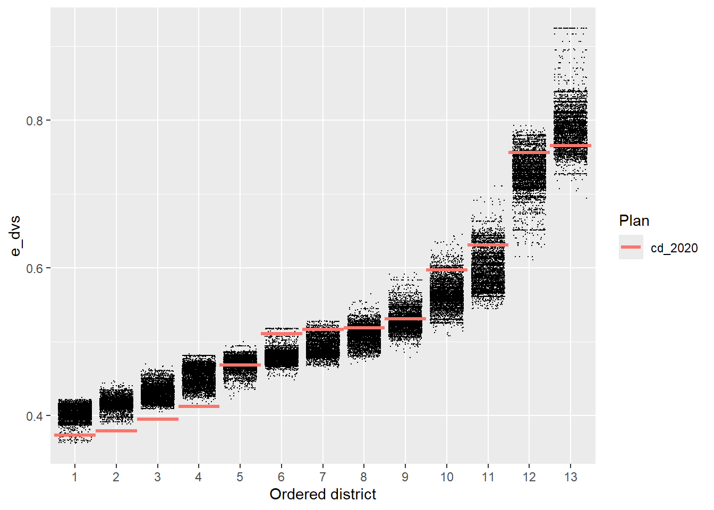
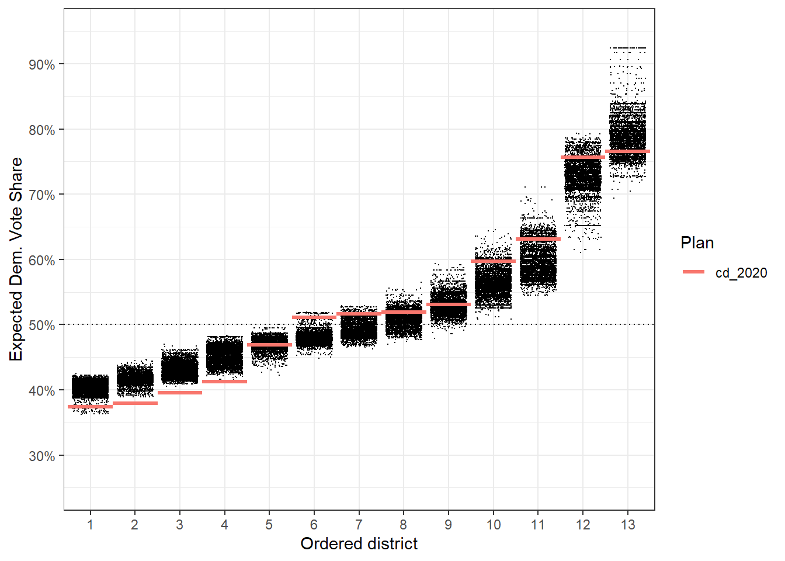
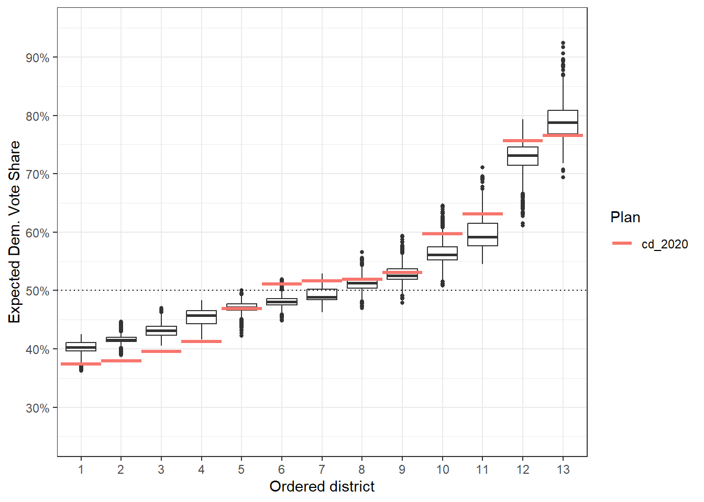
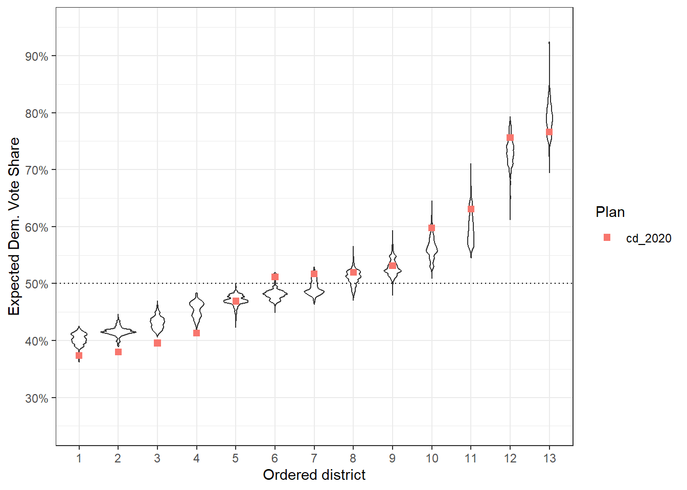
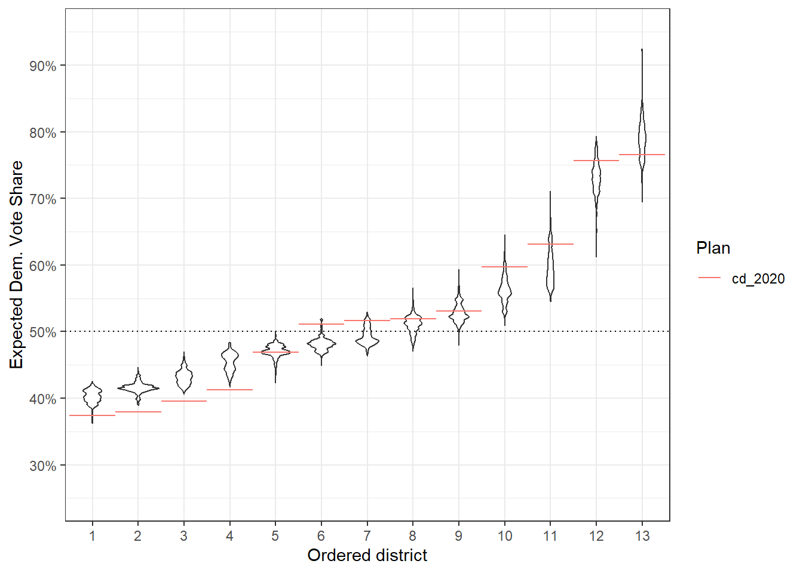
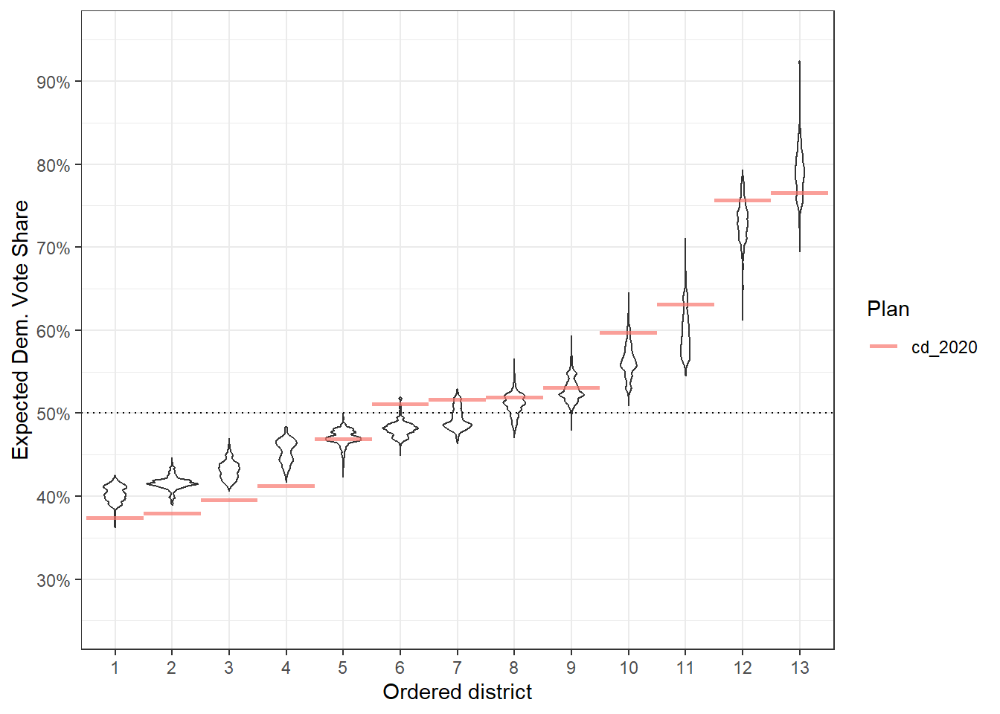
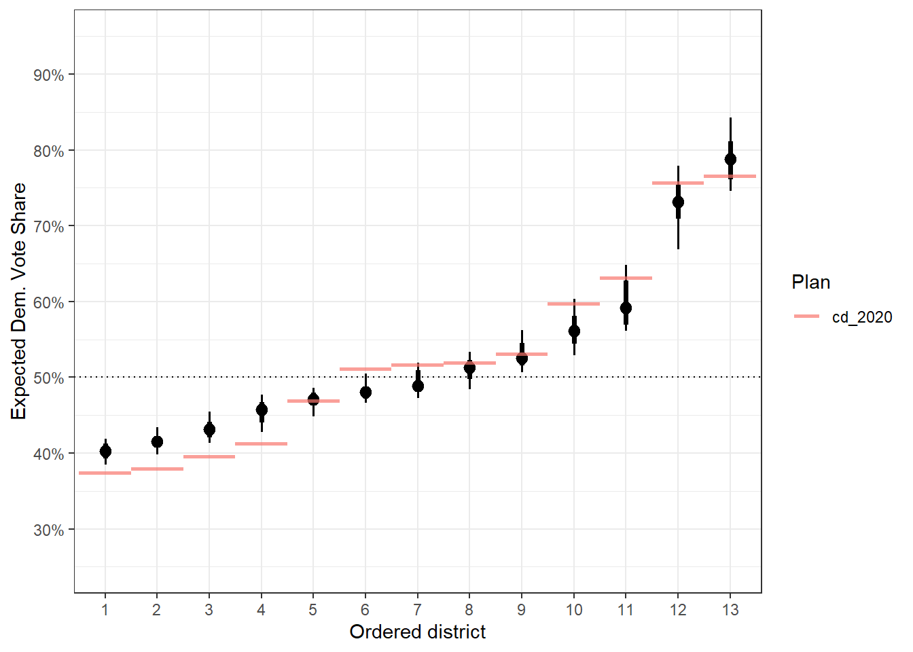
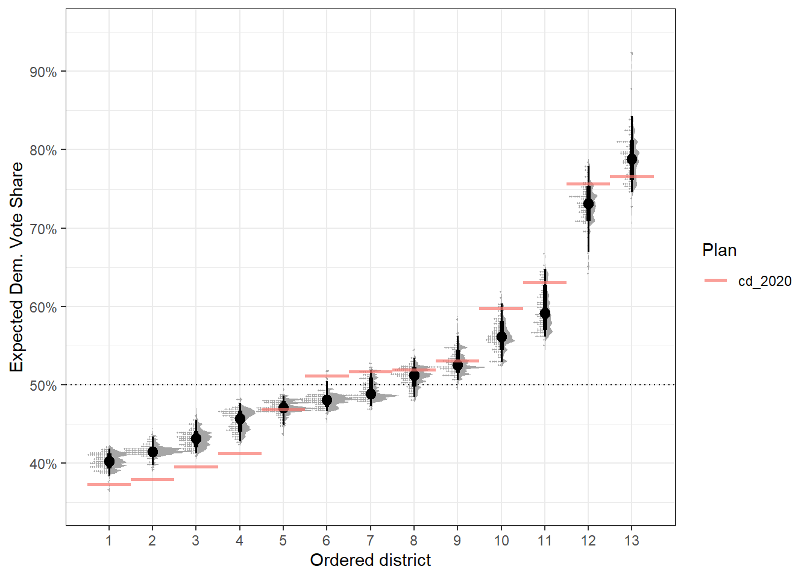

install.packages('redist')redist 4.1
A medium-sized release with more flexible plotting, better diagnostics, and speed improvements.
It’s been a while since redist 4.0 was released and things have been fairly stable. Most of the changes in this release are behind-the-scenes improvements that shouldn’t break your workflow, but should improve your experience using the package.
To install version 4.1, get the new version from CRAN:
New Features
Extends the ordered
box/jitterplots to custom ordered geometries inredist.plot.distr_qtys()Better diagnostic outputs for
summary.redist_plans()Improved confidence intervals with
redist_ci()C++ improvements for sampling more quickly
- Better sampling efficiency in SMC’s final stage
- Quicker random walks for SMC and merge-split.
- Faster random number generation. (It’s small, but it adds up!)
Plotting Flexibility with redist.plot.distr_qtys()
Box-and-whiskers plots are great and useful in many situations. In redistricting, we’ve often used ordered boxplots. These order the x-axis by the quantity on the x-axis. Sometimes, a boxplot throws away information that you might care about, though. >Is the distribution multi-modal? Where are the 2.5th and 97.5th percentiles for a confidence interval?
Now, you can take those questions into your own hands with adjustments to arguments in redist.plot.distr_qtys()!
Let’s build this out a bit. First, we’ll use some data from the 50-State Redistricting Simulations via the alarmdata package.
We can get the redist_map and corresponding 5,000 sampled plus the enacted plans in a redist_plans object for Michigan.
library(dplyr)
library(redist)
library(alarmdata)
map <- alarm_50state_map('MI')
plans <- alarm_50state_plans('MI')plans here has a column e_dvs that gives the expected Democratic vote share for each district in each plan.
redist.plot.distr_qtys(plans, qty = e_dvs)
We’ve always been able to clean or augment this plot up using regular ggplot2 things:
library(ggplot2)
redist.plot.distr_qtys(plans, qty = e_dvs) +
geom_hline(yintercept = 0.5, linetype = 'dotted') +
scale_y_continuous(name = 'Expected Dem. Vote Share', labels = scales::label_percent(),
limits = c(0.25, 0.95), breaks = seq(0.2, 0.9, by = 0.1)) +
theme_bw()
You can draw clear conclusions here, like that districts 2, 3, and 4 are abnormally packed with Republicans compared to what we might normally see when drawing districts that follow the state’s redistricting rules. We might not be able to get all of the information out of this plot that we want, beyond which districts are clear outliers.
Now, if we made it a box plot instead of a jitter plot, as the points can be overwhelming, we can still draw the same major conclusions, and we now have a more formal idea of outliers that don’t just sit above or below the data. Things like district 6 can be still be a bit unclear. Is district 6 in the outlier range or are the points just big on this small plot?
redist.plot.distr_qtys(plans, qty = e_dvs, geom = 'boxplot') +
geom_hline(yintercept = 0.5, linetype = 'dotted') +
scale_y_continuous(name = 'Expected Dem. Vote Share', labels = scales::label_percent(),
limits = c(0.25, 0.95), breaks = seq(0.2, 0.9, by = 0.1)) +
theme_bw()
A first thing we might consider doing is to use a violin plot instead of a boxplot, as that doesn’t summarize distributional information in the same way as a box plot. This is now really easy, just pass ggplot2::geom_violin as an argument to geom.
redist.plot.distr_qtys(plans, qty = e_dvs, geom = ggplot2::geom_violin) +
geom_hline(yintercept = 0.5, linetype = 'dotted') +
scale_y_continuous(name = 'Expected Dem. Vote Share', labels = scales::label_percent(),
limits = c(0.25, 0.95), breaks = seq(0.2, 0.9, by = 0.1)) +
theme_bw()
The defaults here don’t always play the best though, so we might want to also change the reference geometry.
r_geom <- function(...)
ggplot2::geom_segment(
ggplot2::aes(x = as.integer(.distr_no) - 0.5,
xend = as.integer(.distr_no) + 0.5,
yend = e_dvs,
color = .data$draw),
...
)This immediately gets a bit more complicated. For this to work, we need to know a few things:
- The function has to take
...as an argument. - Internally, the variable we are plotting on the x is going to be called
.distr_no. - The reference geometry will inherit
x = .distr_noby default andy = qty, for whatever your input toqtyis.
The above then says, on the x-axis, we want a line from the district - 0.5 to the district + 0.5, while we set yend = e_dvs to match the implicitly set y = e_dvs, since we passed qty = e_dvs before.
redist.plot.distr_qtys(plans, qty = e_dvs, geom = ggplot2::geom_violin, ref_geom = r_geom) +
geom_hline(yintercept = 0.5, linetype = 'dotted') +
scale_y_continuous(name = 'Expected Dem. Vote Share', labels = scales::label_percent(),
limits = c(0.25, 0.95), breaks = seq(0.2, 0.9, by = 0.1)) +
theme_bw()
The good thing here is that we can adjust the ref_geom however we see fit at this point. So if that red line is too dark, but also too skinny, we can do something like changing the alpha:
r_geom <- function(...)
ggplot2::geom_segment(
ggplot2::aes(x = as.integer(.distr_no) - 0.5,
xend = as.integer(.distr_no) + 0.5,
yend = e_dvs,
color = .data$draw),
linewidth = 1, alpha = 0.7,
...
)Then this fixes those particular issues.
redist.plot.distr_qtys(plans, qty = e_dvs, geom = ggplot2::geom_violin, ref_geom = r_geom) +
geom_hline(yintercept = 0.5, linetype = 'dotted') +
scale_y_continuous(name = 'Expected Dem. Vote Share', labels = scales::label_percent(),
limits = c(0.25, 0.95), breaks = seq(0.2, 0.9, by = 0.1)) +
theme_bw()
Now, there are tons of other things we can do here. If we want to revisit the 95% confidence interval issue, we can turn to ggdist.
library(ggdist)
redist.plot.distr_qtys(plans, qty = e_dvs, geom = stat_pointinterval, ref_geom = r_geom) +
geom_hline(yintercept = 0.5, linetype = 'dotted') +
scale_y_continuous(name = 'Expected Dem. Vote Share', labels = scales::label_percent(),
limits = c(0.25, 0.95), breaks = seq(0.2, 0.9, by = 0.1)) +
theme_bw()
Now, we have really clear idea of how wide the 95% confidence interval goes (via the length of the skinny lines).
And really, the sky is the limit with packages like ggdist. For example, if we want a raincloud, we can do that.
raincloud <- function(...) {
list(
ggdist::stat_slab(aes(thickness = ggplot2::after_stat(pdf*n)), scale = 1),
ggdist::stat_dotsinterval(side = "bottom", scale = 1,
slab_size = NA, quantiles = 100)
)
}This gives us a fun plot to work with, though this might be best suited for much larger plot areas.
redist.plot.distr_qtys(plans, qty = e_dvs, geom = raincloud, ref_geom = r_geom) +
geom_hline(yintercept = 0.5, linetype = 'dotted') +
scale_y_continuous(name = 'Expected Dem. Vote Share', labels = scales::label_percent(),
limits = c(0.35, 0.95), breaks = seq(0.2, 0.9, by = 0.1)) +
theme_bw()
Better Diagnostics for summary.redist_plans()
Like above, let’s get some simulated plans from the 50-State Redistricting Simulations. We can get a state like Nevada, which has fewer districts and shorter summary.
library(alarmdata)
plans <- alarm_50state_plans('NV')To get diagnostics, we can call summary(plans) which computes R-hats, sample diversity, and some split-by-split SMC diagnostics.
summary(plans)SMC: 5,000 sampled plans of 4 districts on 2,102 units`adapt_k_thresh`=0.985 • `seq_alpha`=0.5`pop_temper`=0Plan diversity 80% range: 0.55 to 0.74
R-hat values for summary statistics:
pop_overlap total_vap plan_dev comp_edge comp_polsby
1.003 1.003 1.001 1.000 1.000
pop_hisp pop_white pop_black pop_aian pop_asian
1.009 1.005 1.003 1.002 1.003
pop_nhpi pop_other pop_two vap_hisp vap_white
1.000 1.003 1.003 1.007 1.006
vap_black vap_aian vap_asian vap_nhpi vap_other
1.004 1.001 1.002 1.000 1.007
vap_two pre_16_dem_cli pre_16_rep_tru uss_16_dem_cor uss_16_rep_hec
1.003 1.001 1.003 1.000 1.004
uss_18_dem_ros uss_18_rep_hel gov_18_dem_sis gov_18_rep_lax atg_18_dem_for
1.002 1.002 1.002 1.003 1.001
atg_18_rep_dun sos_18_dem_ara sos_18_rep_ceg pre_20_dem_bid pre_20_rep_tru
1.002 1.001 1.003 1.002 1.004
arv_16 adv_16 arv_18 adv_18 arv_20
1.003 1.000 1.003 1.002 1.004
adv_20 county_splits muni_splits ndv nrv
1.002 1.002 1.003 1.002 1.003
ndshare e_dvs pr_dem e_dem pbias
1.003 1.003 1.001 1.002 1.000
egap
1.001 Sampling diagnostics for SMC run 1 of 2 (2,500 samples) Eff. samples (%) Acc. rate Log wgt. sd Max. unique Est. k
Split 1 2,215 (88.6%) 19.7% 0.93 1,583 (100%) 10
Split 2 2,287 (91.5%) 12.8% 0.51 1,565 ( 99%) 6
Split 3 2,242 (89.7%) 5.9% 0.56 1,441 ( 91%) 4
Resample 1,352 (54.1%) NA% 0.57 1,409 ( 89%) NA Sampling diagnostics for SMC run 2 of 2 (2,500 samples) Eff. samples (%) Acc. rate Log wgt. sd Max. unique Est. k
Split 1 2,228 (89.1%) 15.1% 0.91 1,584 (100%) 13
Split 2 2,285 (91.4%) 9.7% 0.52 1,574 (100%) 8
Split 3 2,236 (89.4%) 5.0% 0.58 1,444 ( 91%) 5
Resample 1,471 (58.8%) NA% 0.59 1,399 ( 89%) NA • Watch out for low effective samples, very low acceptance rates (less than
1%), large std. devs. of the log weights (more than 3 or so), and low numbers
of unique plans. R-hat values for summary statistics should be between 1 and
1.05.The first big change here is that the digits are now rounded to three digits. You no longer need to search through 8 decimal digits at 3am for the ones that matter.
Typically, we want R-hat values between 1 and 1.05, so this looks pretty good. What if they weren’t? We can introduce this behavior by adding some new variable with very different values by independent run of SMC (denoted by the chain column).
plans <- plans %>%
mutate(bad_rhat = rnorm(n = n(), mean = dplyr::coalesce(chain, 0)))Now this gets angry:
summary(plans)SMC: 5,000 sampled plans of 4 districts on 2,102 units`adapt_k_thresh`=0.985 • `seq_alpha`=0.5`pop_temper`=0Plan diversity 80% range: 0.55 to 0.75
R-hat values for summary statistics:
pop_overlap total_vap plan_dev comp_edge comp_polsby
1.003 1.003 1.001 1.000 1.000
pop_hisp pop_white pop_black pop_aian pop_asian
1.009 1.005 1.003 1.002 1.003
pop_nhpi pop_other pop_two vap_hisp vap_white
1.000 1.003 1.003 1.007 1.006
vap_black vap_aian vap_asian vap_nhpi vap_other
1.004 1.001 1.002 1.000 1.007
vap_two pre_16_dem_cli pre_16_rep_tru uss_16_dem_cor uss_16_rep_hec
1.003 1.001 1.003 1.000 1.004
uss_18_dem_ros uss_18_rep_hel gov_18_dem_sis gov_18_rep_lax atg_18_dem_for
1.002 1.002 1.002 1.003 1.001
atg_18_rep_dun sos_18_dem_ara sos_18_rep_ceg pre_20_dem_bid pre_20_rep_tru
1.002 1.001 1.003 1.002 1.004
arv_16 adv_16 arv_18 adv_18 arv_20
1.003 1.000 1.003 1.002 1.004
adv_20 county_splits muni_splits ndv nrv
1.002 1.002 1.003 1.002 1.003
ndshare e_dvs pr_dem e_dem pbias
1.003 1.003 1.001 1.002 1.000
egap bad_rhat
1.001 ❌1.233 ✖ WARNING: SMC runs have not converged.Sampling diagnostics for SMC run 1 of 2 (2,500 samples) Eff. samples (%) Acc. rate Log wgt. sd Max. unique Est. k
Split 1 2,215 (88.6%) 19.7% 0.93 1,583 (100%) 10
Split 2 2,287 (91.5%) 12.8% 0.51 1,565 ( 99%) 6
Split 3 2,242 (89.7%) 5.9% 0.56 1,441 ( 91%) 4
Resample 1,352 (54.1%) NA% 0.57 1,409 ( 89%) NA Sampling diagnostics for SMC run 2 of 2 (2,500 samples) Eff. samples (%) Acc. rate Log wgt. sd Max. unique Est. k
Split 1 2,228 (89.1%) 15.1% 0.91 1,584 (100%) 13
Split 2 2,285 (91.4%) 9.7% 0.52 1,574 (100%) 8
Split 3 2,236 (89.4%) 5.0% 0.58 1,444 ( 91%) 5
Resample 1,471 (58.8%) NA% 0.59 1,399 ( 89%) NA • Watch out for low effective samples, very low acceptance rates (less than
1%), large std. devs. of the log weights (more than 3 or so), and low numbers
of unique plans. R-hat values for summary statistics should be between 1 and
1.05.• SMC convergence: Increase the number of samples. If you are experiencing low
plan diversity or bottlenecks as well, address those issues first.It warns about convergence, as it has since 4.0. But it now also adds a big red “x” next to bad_rhat’s R-hat.
Any questions? Open an issue on GitHub or find us on Twitter.